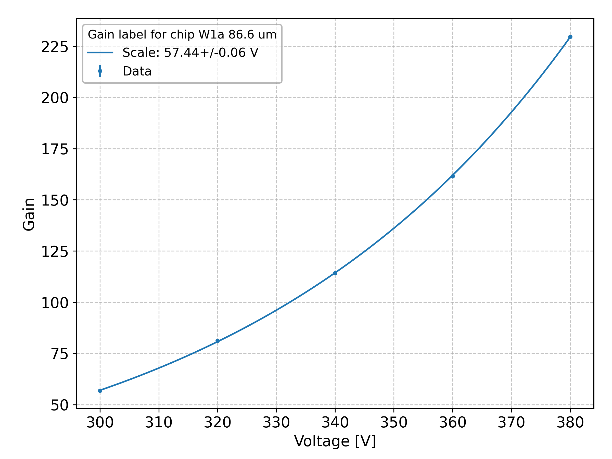
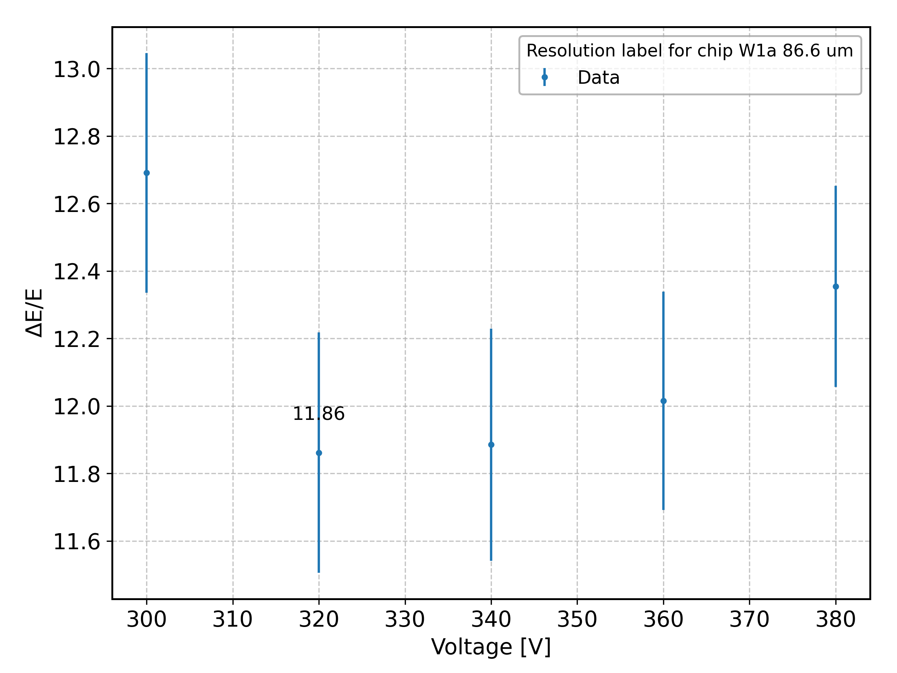
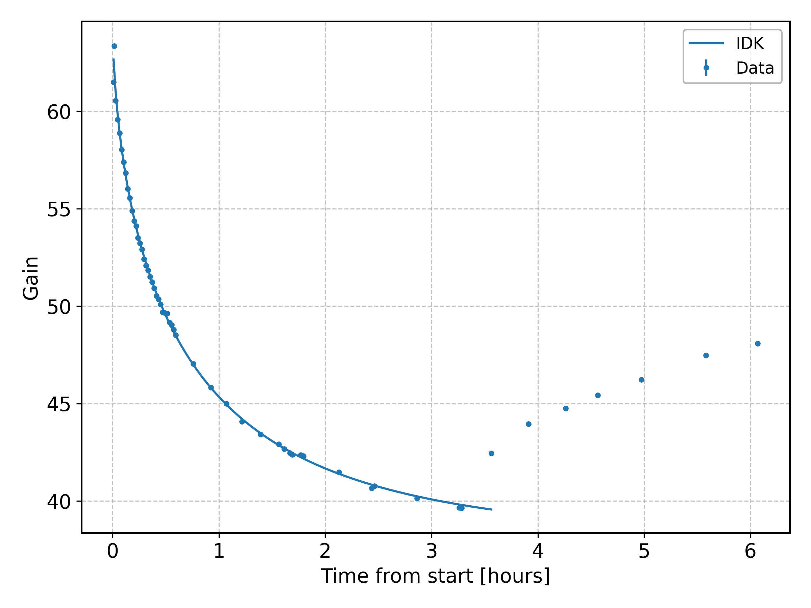
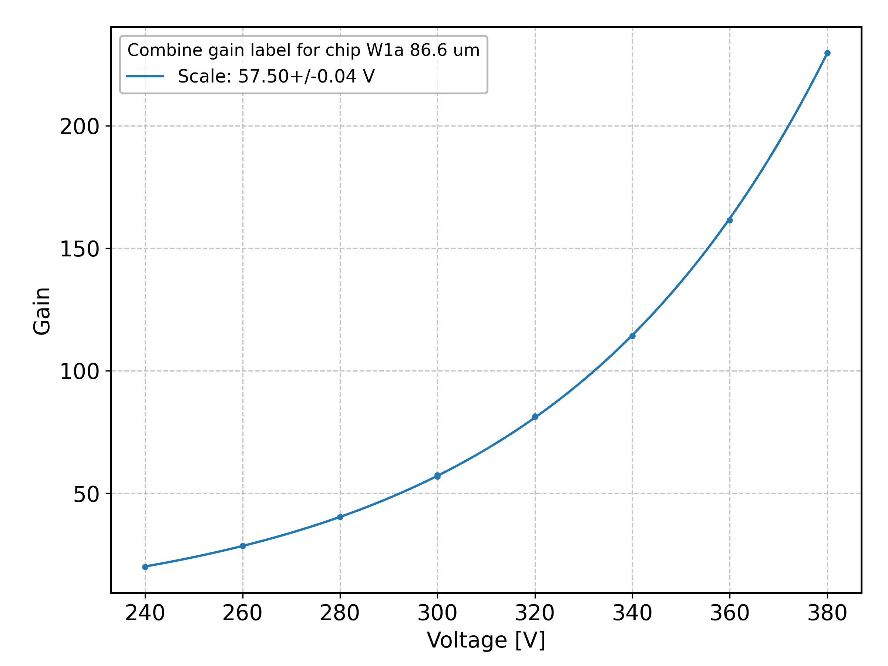

Examples of Analysis
To run the analysis, first you need to write the configuration file following the Analysis and Configuration Guide.
Single file analysis
In this example, a basic analysis of a single source file is performed. See the configuration YAML file snippet for more details.
# Set the properties of the source and detector. This part is optional if the source
# is Fe55 and if the gas is Ar
source:
energy: 5.9
w: 26.0
# Define the analysis pipeline
pipeline:
# Execute the calibration
- task: calibration
show: false
- task: fit_spec
subtasks:
# Fit the main line of the spectrum with a double Gaussian
- target: main
model: Fe55Forest
# Estimate the gain using the main line fit
- task: gain
target: main
# Estimate the resolution of the main line using Fe55Forest fit
- task: resolution
target: main
- task: plot
# Plot the spectrum in the region around the main line showing both fits
targets:
- main
# Show the gain and resolution results in the legend
task_labels:
- gain
- resolution
# Scale the xrange on the left to show the escape peak, which of Fe55 is
# located at about half the charge of the main peak.
xmin_factor: 0.5
# Configure the style of the spectrum plot
style:
tasks:
plot:
title: $^{55}$Fe Spectrum
label: Data label
legend_label: Example legend label
After writing the configuration file, the analysis can be launched from the command line interface with:
After the analysis is completed, the result is the following plot, showing the main emission line and the escape peak, along with the fit models and the legend showing the gain and energy resolution results:

Folder analysis
In this example, the analysis of a folder is performed. You can see from the configuration YAML file snippet below that the configuration file doesn't differ much from that for the single file analysis. Indeed, the configuration files are quite flexible and most of the tasks can be executed both on single and multiple files or folders. The main difference for some tasks is the possibility to specify particular keys that work only on multiple files, otherwise nothing is done.
pipeline:
# Execute the calibration
- task: calibration
show: false
- task: fit_spec
subtasks:
# Fit the main line of the spectrum with a double Gaussian.
- target: main
model: Fe55Forest
# Estimate the gain from the main line
- task: gain
target: main
fit: true # Fit the gain with an exponential model
show: true # Plot gain vs back voltage
# Estimate the resolution from the main line
- task: resolution
target: main
show: true # Plot resolution vs back voltage
# Set the style of the tasks plot
style:
tasks:
# Configure gain task plot
gain:
marker: d
linestyle: --
color: black
label: Gain data
legend_label: $\mu$GPD
title: Gain analysis
yscale: log
resolution:
marker: .
color: blue
label: Resolution data
legend_label: $\mu$GPD
title: Energy resolution analysis
annotate_min: true
The command to run is:
Setting the show key to true for the gain and resolution tasks, the output plots are the following:
 
Analysis of gain variation with time
In this example, the analysis of a folder to study the gain variation with time is performed. The gain is estimated during the task, so it is not necessary to execute a gain task before. The gain is fitted in a fixed range with a composite model StrecthedExponential + Constant.
pipeline:
# Execute the calibration
- task: calibration
show: false
- task: fit_spec
subtasks:
# Fit the main line of the spectrum with a double Gaussian.
- target: main
model: Fe55Forest
# Execute the gain_trend task on the main line of the spectrum
- task: gain_trend
target: main
# Fit the gain trend
subtasks:
- target: charging
model: StretchedExponential + Constant # Fit with a composite model
# Set the fit parameters
fit_pars:
xmax: 3.8 # Right limit for fit range
p0: [25., 0.6, 0.7, 40.] # Initial parameters for specified fit model
The command to run is the same as the Folder Analysis example. The output of the program is the following:

Gain and resolution comparison of two folders
In this example, two folders are analyzed to compare the gain and the energy resolution estimates. The gain data is combined together and fitted with a single exponential. The energy resolution is only compared.
Note: to execute these tasks, it is necessary to first execute the gain or resolution tasks, and then
pipeline:
# Execute the calibration
- task: calibration
show: false
- task: fit_spec
subtasks:
- target: main
model: Fe55Forest
# Estimate the gain from the main line
- task: gain
target: main
# Estimate the resolution from the main line
- task: resolution
target: main
# Execute the task to combine the gain results from two folders and fit the
# data with a single exponential model
- task: compare_gain
target: main
combine: # Combine the data
- folder
- folder1
# Execute the task to show the energy resolution results from the two folders
# without combining the data
- task: compare_resolution
target: main
# Define the styles for comparison plots
style:
# Set the labels for gain and resolution comparison plot
tasks:
compare_gain:
title: Combine gain results
legend_label: $\mu$GPD
yscale: linear
compare_resolution:
title: Compare energy resolution results
legend_label: $\mu$GPD
folders:
# Set combined data style (only for gain)
combine:
label: Combined data
marker: .
color: black
linestyle: "--"
# Set folder data style (for resolution)
folder:
label: Folder 0 data
marker: x
color: black
folder1:
label: Folder 1 data
marker: v
color: red
To run this analysis the command is:
The output is the following:
